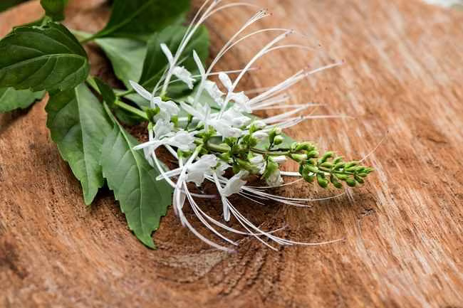

Kandungan Utama
- Flavonoid (Sinensetin)
- Tanin
- Minyak Atsiri
- Kalium
- Saponin
- Polifenol
- Asam Organik
- Antioksidan alami


Nama Ilmiah : Orthosiphon aristatus
Kumis kucing merupakan salah satu tanaman obat keluarga (TOGA) yang banyak dimanfaatkan dalam pengobatan tradisional di Indonesia. Tanaman ini dikenal karena bunganya yang memiliki benang sari panjang menyerupai kumis kucing. Daunnya mengandung berbagai senyawa aktif yang dipercaya bermanfaat untuk membantu menjaga kesehatan ginjal, saluran kemih, serta membantu memperlancar pengeluaran urine secara alami.
Kumis kucing secara tradisional dipercaya memiliki berbagai manfaat bagi kesehatan, terutama dalam menjaga fungsi ginjal dan saluran kemih. Tanaman ini bersifat diuretik sehingga dapat membantu melancarkan buang air kecil, membantu menjaga kesehatan ginjal, membantu meluruhkan batu saluran kemih, serta membantu mengurangi risiko infeksi saluran kemih ringan. Selain itu, kandungan flavonoid dan antioksidannya berperan membantu melindungi sel-sel tubuh dari radikal bebas, membantu mengurangi peradangan ringan, membantu menurunkan kadar asam urat, mengurangi pembengkakan akibat penumpukan cairan, serta membantu menjaga kesehatan tubuh secara umum apabila dikonsumsi sebagai bagian dari pola hidup sehat.
Kumis kucing umumnya digunakan sebagai obat tradisional. Konsumsilah dalam jumlah yang wajar dan tidak berlebihan. Ibu hamil, ibu menyusui, penderita penyakit ginjal berat, maupun seseorang yang sedang mengonsumsi obat diuretik atau obat dari dokter sebaiknya berkonsultasi dengan tenaga kesehatan sebelum menggunakan tanaman ini sebagai terapi pendamping.